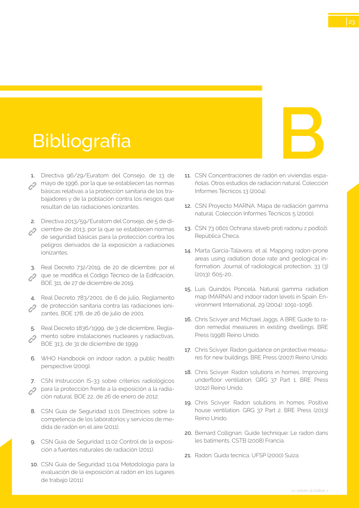

GUIA · Bibliografía · versión sin-fecha · capa guia
Formatos: JSON compacto · Markdown · PDF fuente
Ámbito del documento · texto del ámbito · documento y tablas
Tipo: tablas, figuras · nivel 1 · sección estimada: Bibliografía · padre:
Bibliografía SECRETARÍA GENERAL DE AGENDA URBANA Y VIVIENDA DIRECCIÓN GENERAL DE AGENDA URBANA Y ARQUITECTURA GOBIERNO DE ESPAÑA MINISTERIO DE TRANSPORTES, MOVILIDAD Y AGENDA URBANA GOBIERNO DE ESPAÑA MINISTERIO DE CIENCIA E INNOVACIÓN

PDF fuente redistribuible: copia fiel enlazada en esta página (SHA256 verificado).